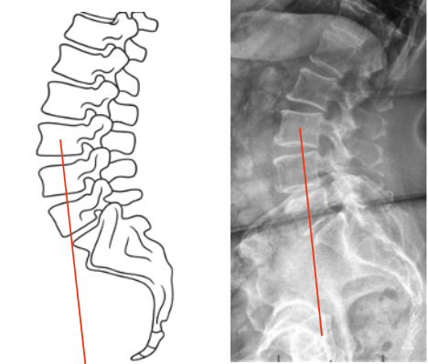

1) Description of Measurement
Ferguson’s Line, also known as the Weight-bearing Line of the Lumbar Spine, is a radiographic alignment reference used to evaluate sagittal load distribution through the lumbar spine and pelvis during standing posture.
This measurement assesses whether the axial load of the upper body is being transmitted appropriately through the lumbosacral junction. It is particularly useful in identifying anterior or posterior sagittal imbalance, instability, or pathologic stress on the sacrum.
When drawn correctly, Ferguson’s Line passes vertically from the center of the L3 vertebral body down through the sacrum. Its relative position on the sacral base indicates whether spinal loading is balanced (normal) or shifted (pathologic).
2) Instructions to Measure
3) Normal vs. Pathologic Ranges
Key Point: In a physiologic posture, the vertical load from L3 should fall through the anterior third of the sacral base to maintain efficient energy transfer and lumbosacral stability.
4) Important References
Ferguson AB. The weight-bearing line in relation to lumbar disc conditions. J Bone Joint Surg. 1931;13(4):875–890.
Roussouly P, Gollogly S, Berthonnaud E, Dimnet J. Classification of the normal variation in the sagittal alignment of the human lumbar spine and pelvis. Spine. 2005;30(3):346–353.
Vialle R, Levassor N, Rillardon L, Templier A, Skalli W, Guigui P. Radiographic analysis of the sagittal alignment and balance of the spine in asymptomatic subjects. J Bone Joint Surg Am. 2005;87(2):260–267.
Le Huec JC, Aunoble S, Philippe L, Nicolas P. Pelvic parameters: origin and significance. Eur Spine J. 2011;20(Suppl 5):564–571.
Schwab FJ, Lafage V, Patel A, Farcy JP. Sagittal plane considerations and the pelvis in the adult patient. Spine. 2009;34(17):1828–1833.
5) Other info....
Ferguson’s Line provides a simple visual estimation of sagittal balance and weight transmission through the spine in the standing position.
It serves as an early radiographic method to assess functional alignment before modern parameters (SVA, PI–LL, PT, etc.) were developed, and it remains conceptually useful.
Anterior deviation indicates hyperlordotic patterns or forward sagittal shift; posterior deviation correlates with flat-back or posterior pelvic rotation.
The measurement should be performed on standing images only—supine X-rays misrepresent load alignment.
Clinically, it helps correlate imaging with postural fatigue, low-back pain, or sagittal imbalance.
For comprehensive evaluation, it should be analyzed in conjunction with:
Modern use: Ferguson’s Line still appears in educational and historical contexts as a conceptual tool linking classic radiography with modern sagittal analysis.